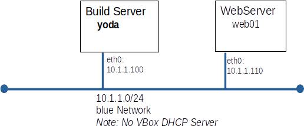

You will submit a report generated by the script, HostInfo_01.sh. This script is part of a tar archive for this evaluation.
Overview:
Today you will built your first production server - talk about a test! You will be building a web server, web01.

Part A: Build and Patch web01
- Patch from the YUM repos on yoda.
- Make sure that web01 only looks to yoda for YUM repos.
- Set static IP addresses
- Set static hostname
- Add yoda and web01 to /etc/hosts on web01
Part B: Install Apache on web01
- Install Apache
- Configure Apache to start automatically
- Start Apache
- Create a custom home page containing the text Welcome to web01
Part C: Enhance your Kickstart File
Your automated builds are going very well and saving you a lot of time. Encouraged by this you decide to modify your default Kickstart file to automate a few tasks you perform on every system after installation.
- Backup your Kickstart file to /var/www/html/Kickstart/default.ks.back
- Create a user on every new system with user_name=rocky and password=donttellbjm using the user command in your Kickstart file.
- Configure rocky's .bashrc with the alias lt='ls -lrt'
Part D: Add a Patch to Updates
A newer version of bash has been approved for deployment. It will be added to the miniPatch repo on yoda.
- Install the command you will need to update the repo data.
yum install createrepo_c
- Copy bash-4.4.19-14.el8.x86_64.rpm to /var/www/html/miniPatch
- Update the repo data for miniPatch
createrepo /var/www/html/miniPatch
- Check our work from web01
yum clean all
yum list bash
- Update web01 to install bash-4.4.19-14
Note: This task is not directly from a lab. Pre-test practice is recommended.
Part E: Submitting your work for grading
- Run HostInfo_1.sh on w01 to produce web01_report.html
- Submit w01_report.html to Canvas